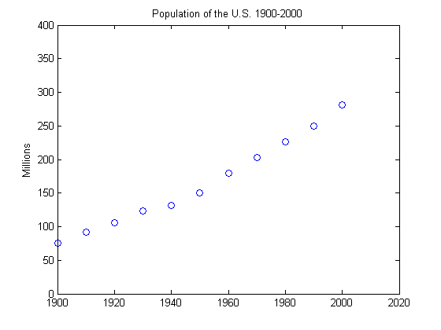
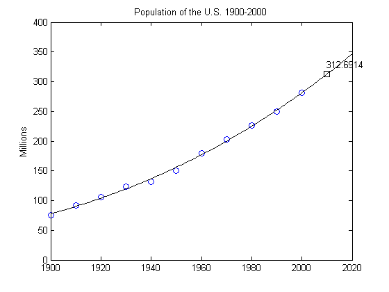
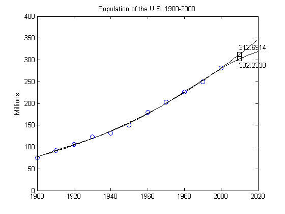
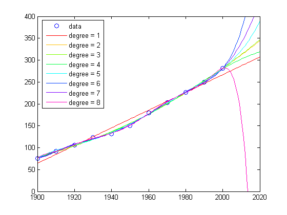

This example is older than MATLAB. It started as an exercise in "Computer Methods for Mathematical Computations", by Forsythe, Malcolm and Moler, published by Prentice-Hall in 1977.
Now, MATLAB and Handle Graphics make it much easier to vary the parameters and see the results, but the underlying mathematical principles are unchanged. It shows that using polynomials of even modest degree to predict the future by extrapolating data is a risky business.
Here is the US Census data from 1900 to 2000.
% Time interval t = (1900:10:2000)'; % Population p = [75.995 91.972 105.711 123.203 131.669 ... 150.697 179.323 203.212 226.505 249.633 281.422]'; % Plot plot(t,p,'bo'); axis([1900 2020 0 400]); title('Population of the U.S. 1900-2000'); ylabel('Millions');
What is your guess for the population in the year 2010?
p
p = 75.9950 91.9720 105.7110 123.2030 131.6690 150.6970 179.3230 203.2120 226.5050 249.6330 281.4220
Let's fit the data with a polynomial in t and use it to extrapolate to t = 2010. The coefficients in the polynomial are obtained by solving a linear system of equations involving a 11-by-11 Vandermonde matrix, whose elements are powers of scaled time, A(i,j) = s(i)^(n-j);
n = length(t); s = (t-1950)/50; A = zeros(n); A(:,end) = 1; for j = n-1:-1:1, A(:,j) = s .* A(:,j+1); end
The coefficients c for a polynomial of degree d that fits the data p are obtained by solving a linear system of equations involving the last d+1 columns of the Vandermonde matrix:
A(:,n-d:n)*c ~= p
If d is less than 10, there are more equations than unknowns and a least squares solution is appropriate. If d is equal to 10, the equations can be solved exactly and the polynomial actually interpolates the data. In either case, the system is solved with MATLAB's backslash operator. Here are the coefficients for the cubic fit.
c = A(:,n-3:n)\p
c =
1.2629
23.7261
100.3659
155.9043
Now we evaluate the polynomial at every year from 1900 to 2010 and plot the results.
v = (1900:2020)'; x = (v-1950)/50; w = (2010-1950)/50; y = polyval(c,x); z = polyval(c,w); hold on plot(v,y,'k-'); plot(2010,z,'ks'); text(2010,z+15,num2str(z)); hold off
Compare the cubic fit with the quartic. Notice that the extrapolated point is very different.
c = A(:,n-4:n)\p; y = polyval(c,x); z = polyval(c,w); hold on plot(v,y,'k-'); plot(2010,z,'ks'); text(2010,z-15,num2str(z)); hold off
As the degree increases, the extrapolation becomes even more erratic.
cla plot(t,p,'bo'); hold on; axis([1900 2020 0 400]); colors = hsv(8); labels = {'data'}; for d = 1:8 [Q,R] = qr(A(:,n-d:n)); R = R(1:d+1,:); Q = Q(:,1:d+1); c = R\(Q'*p); % Same as c = A(:,n-d:n)\p; y = polyval(c,x); z = polyval(c,11); plot(v,y,'color',colors(d,:)); labels{end+1} = ['degree = ' int2str(d)]; end legend(labels,2)